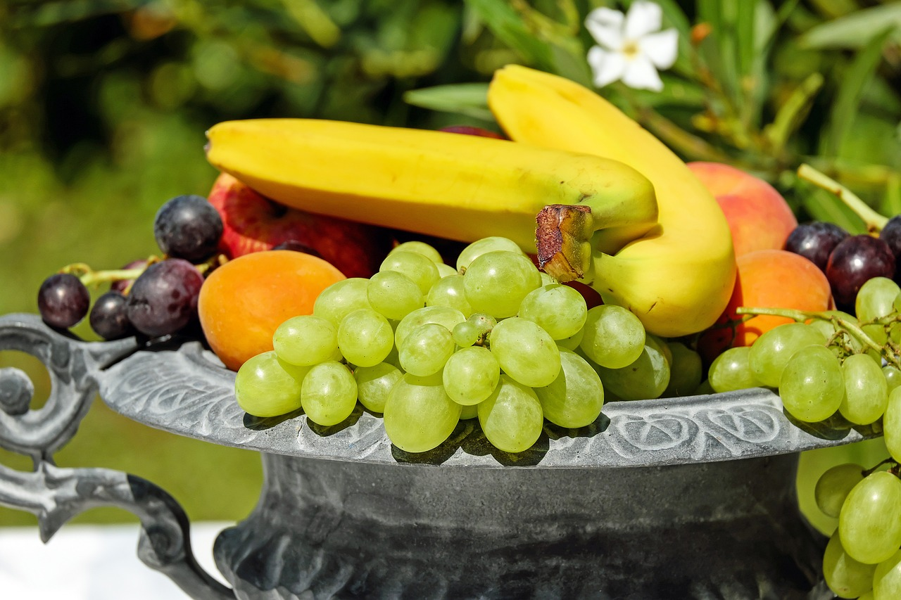

프리미엄
🍎사과전문점
(구)휴튼청과(조례동남양휴튼상가)
새롭게 OPEN 했습니다
순천시 이수로 134 (순천찹쌀떡옆)
와!!
먹고싶다!!
맛있는 사과
만을 고집합니다
기후변화
다양한 속성재배(착색·성장제)
상품성위주의
재배로 인하여
아삭하고 맛있는
사과 찾기가
힘든 현실입니다
가격이 문제가
아닙니다
합리적인 가격도 중요 하지만
매일 식탁에 오른
맛있는 🍎사과를 원하신다면
다년간 축적된 경험과 노하우로
전국 이곳저곳을 돌며
시식(당도,식감,선별)을 통한
산·지·직·송 판매합니다
산지에서
전해드립니다
합리적이면서
가장 맛있는 사과를
전해드리기 위해
사과의 고장까지 직접가서
확인 후에
전해드립니다
과일은
전문가에게
사과만 잘 아는게 아닙니다
산마, 대추, 아몬드 등 기타 과일도
다년간의 노하우로
맛있는 것을
기가막히게 전해드립니다

맛있는 토울고구마도
아래 전화해주시면
선주문 가능합니다
전화하기
구매대행
도 가능합니다
따로 찾으시는 과일이 있으시다면
소정의 수수료만 받고
저희가 대신 구매해드립니다.
신선하고
저렴하고
맛있는 과일을
욕심부리지 않고
고객님과 함께합니다.
사과
밴드회원 모집
🍎사과회원 공동구매 서비스
산지 쥐급품목
사과,산마,대추.알호두,기타
꿀고구마,호박고구마
(토울및 맛있는 고구마)
주문하시면 소정의 수수료만 받고
구매 대행 해드립니다.
밴드회원이 되시면
보다 신선하고
맛있는 과일을
합리적인 가격으로
만나실 수 있습니다.
밴드가입하러가기
사과가맛있는집
061-726-5007
010-9191-0190
순천시 이수로 134 (순천찹쌀떡옆)
전화하기
위치보기